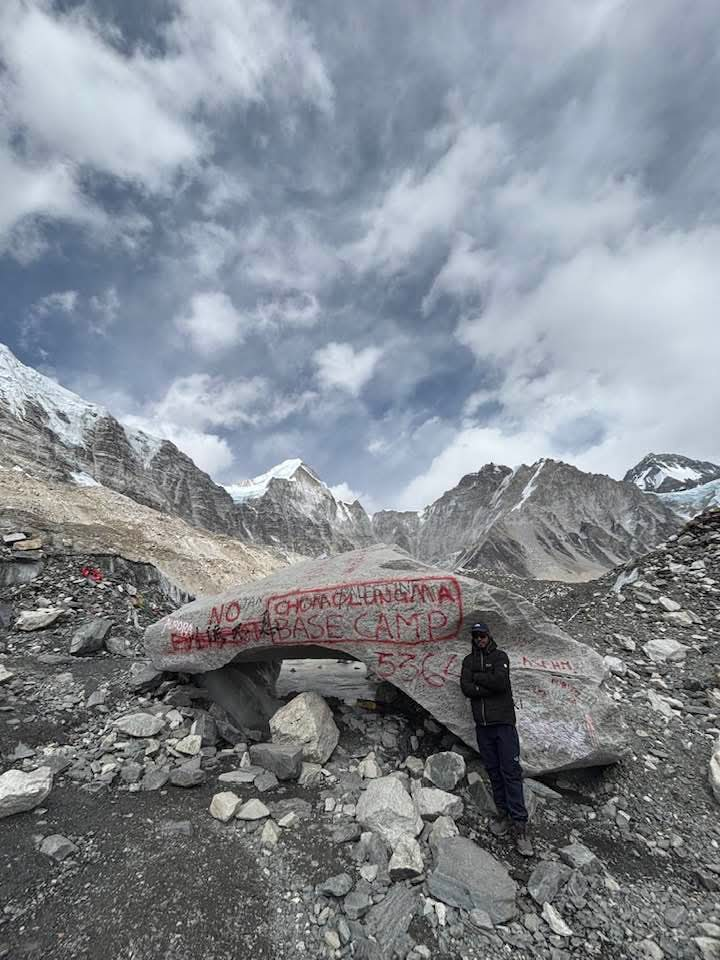
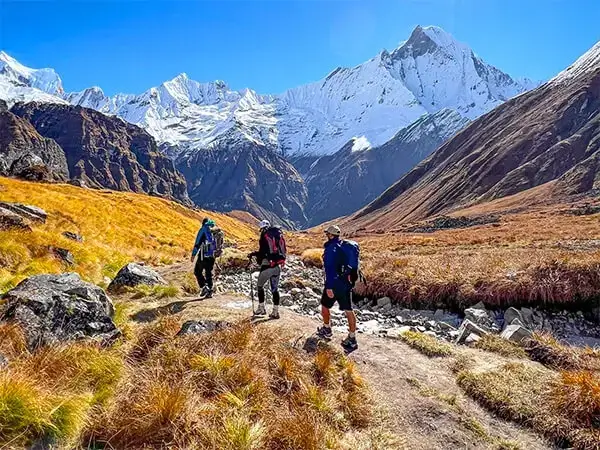
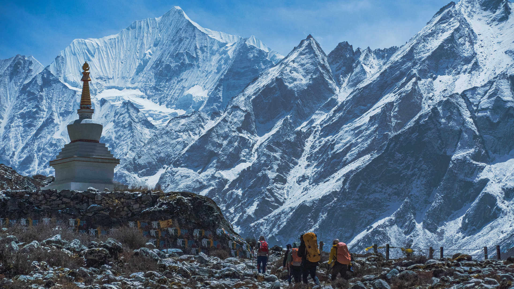
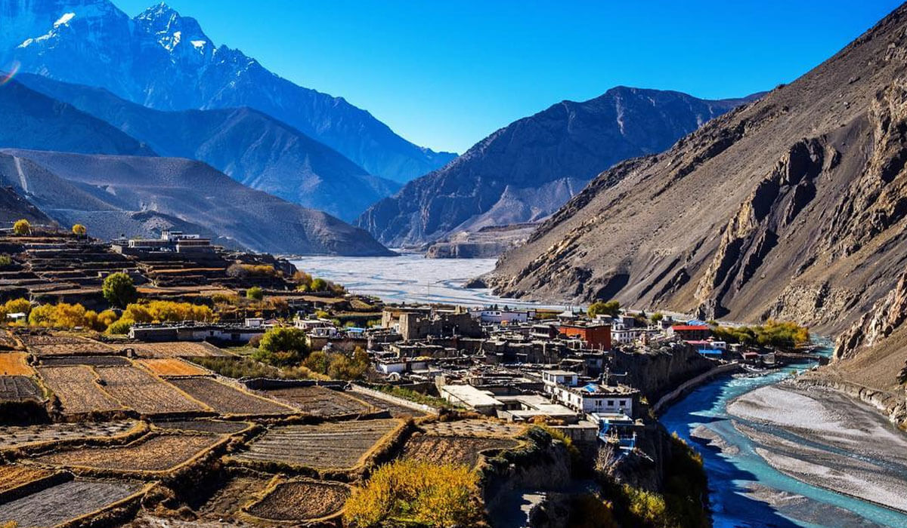
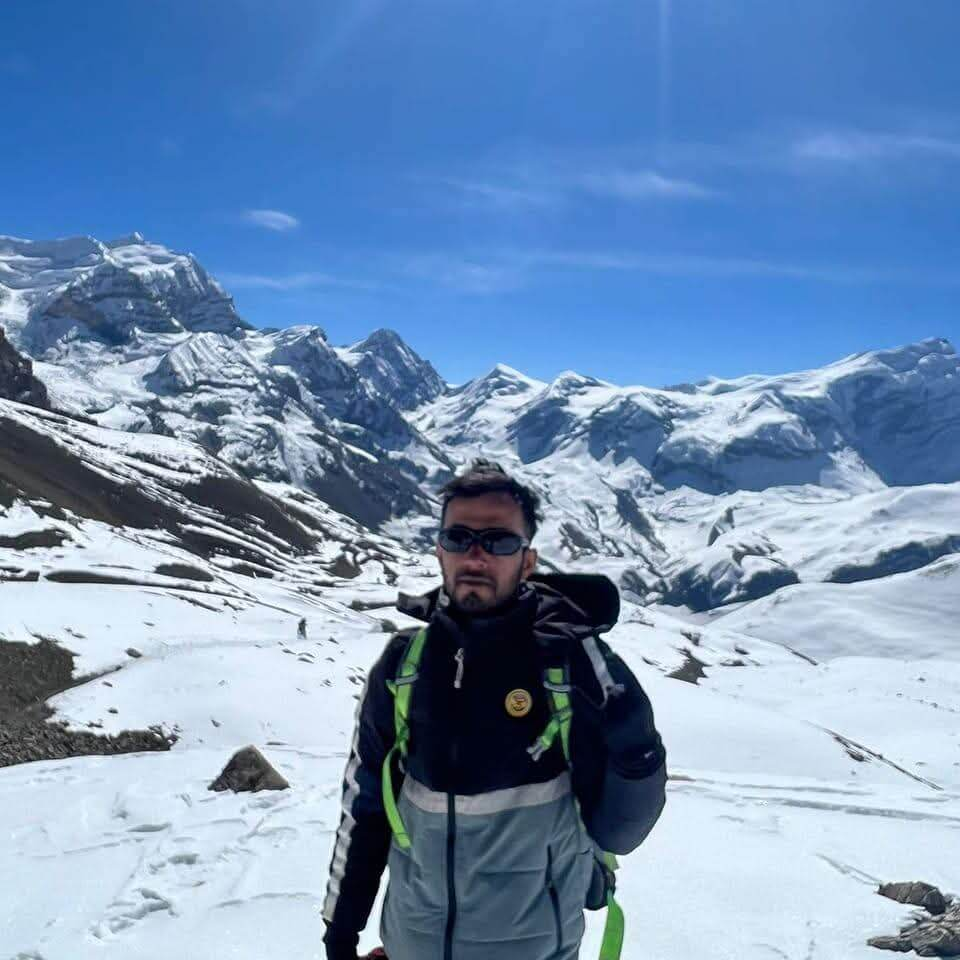
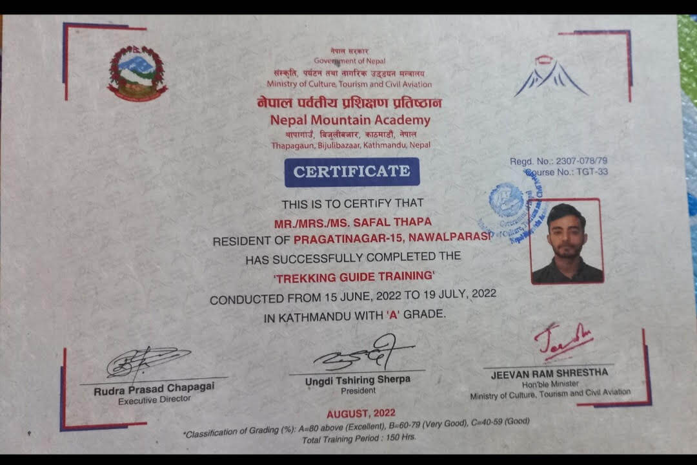

Our Trekking Packages

Everest Base Camp
Journey to the base of the world's highest peak. 14 days of adventure and culture.

Annapurna Circuit
Circle the Annapurna massif through lush forests and mountain passes. 16 days.

Langtang Valley
Scenic trek close to Kathmandu with rich Tamang culture. 10 days.

Upper Mustang
Explore the hidden kingdom of Mustang, its caves, and unique landscapes. 12 days.

Safal, Lead Guide
About Us
We are passionate trekkers and guides with decades of experience in the Himalayas. Our mission is to share the beauty and culture of Nepal with adventurers from around the world. Our guides are certified, experienced, and dedicated to your safety and enjoyment. Join us for an unforgettable journey!

Guide certificate
Contact
Send us a WhatsApp:
+977 980-9571717
Or an Email:
nepsafal@gmail.com